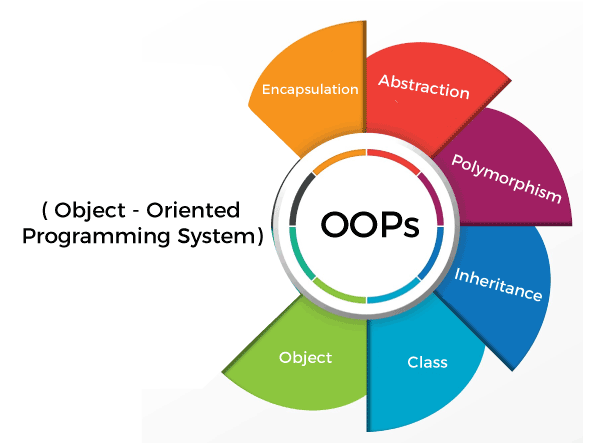

Computer Science Knowledge:
Programming: Object-Oriented Programming, Data Structures, Algorithms Data Science: Excel, Data Warehouse Design, Databases, Pentaho (ETL tools) Machine Learning: Classical ML algorithms, Deep Learning, Graph Neural Networks, Time series analysis, Pytorch, Tensorflow
Languages: English (equivalent to native), Chinese (native), German (classroom-level)
Awards
Faculty Honors: Dean's List from Georgia Institute of Technology in Fall 2022, Spring 2023, Fall 2023.
I currently work at Fung Group at Georgia Institute of Technology on applying Machine Learning techniques in the field of material science
under Associate Professor Victor Fung at School of CSE at Georgia Tech. Here is a list of projects I worked on:
Utilize graph contrastive learning in pretraining to enhance the performance of CGCNN for energy predictions.
Create an ASE-based calculator and establish procedures for structure optimization and molecular dynamic simulation experiments.
The relevant code is available in our lab's MatDeepLearn repository.
Devise hybrid models that integrate Graph Neural Networks with physical potentials to augment the performance of GNNs in predicting crystal structure properties.
Related skills: Graph Neural Networks (GNNs), PyTorch framework, deep learning, physically-informed machine learning, and research methods.
Teaching Assistant

I have been employed part-time as a teaching assistant for the College of Computing since the Spring 2023 for CS 1331: Introduction to Object-Oriented Programming, spanning four semesters.
Collaborate with a team of 40+ TAs to assist professors in delivering course content to a large student body, averaging 900 students per semester.
Conduct weekly 75-minute recitation sessions to comprehensively review crucial OOP concepts with students.
Fulfill the role of Forum Lead, responding to student questions on the course discussion forum.
Dedicate a minimum of three hours weekly in the office, providing one-to-one assistance to students.
Demonstrate proficiency in interpersonal communication skills and deliver meticulous, tailored feedback to support student growth.
Projects
Plot Visualizer
Led a 4-member team in developing "Plot Visualizer" to improve STEM education accessibility for students with learning difficulties by transforming graph data into data series through visualization.
Github link: here.
Created a comprehensive dataset and implemented a fine-tuned YOLOv7 model for object detection and a fine-tuned EasyOCR model for text recognition. These models excel in handling challenging scenarios such as blurred or tilted images with noise.
Utilized OpenCV for image editing and visualization tasks.
Developed a user-focused website using Flask for the backend and HTML/CSS for the frontend to showcase the entire data visualization pipeline.
Related skills: Pytorch, Huggingface, Flask, Web Development, Computer Vision (OpenCV), Leadership
Stock Tweet
Collaborated within a 4-member team to develop "Stock Tweet," a project customized for PR teams of companies.
Devpost link: here.
Conducted thorough analysis on tweets from publicly traded companies to discern emerging keyword trends associated with stock price increases and decreases. Implemented a feature to evaluate the potential impact of sample tweets on stock prices, visually presenting findings through an aesthetically pleasing word cloud.
Contributed by establishing a MongoDB database for storing data obtained from the Twitter API. Utilized the Python "wordcloud" package to create visually appealing representations of popular terms. Engaged in close collaboration with team members to leverage the gpt-2 model for generating sample tweets based on trending keywords.
Related skills: MongoDB, Natural Language Processing, Web development with Wix, Data Visualization.
Customer Data Analysis
Successfully completed a 4-week guided study at Apple under the mentorship of a current Apple data analyst, Yiqiong Liu (Contact info: Yiqiong_liu@apple.com, Tel: +1 718-216-9876).
Acquired practical experience in employing diverse data analysis and engineering methodologies, including the utilization of PySpark for user data analysis.
Developed predictive models aimed at assessing the likelihood of user refund policy misuse. Gained a comprehensive understanding of the end-to-end model construction process and its practical implications.
Related Skills: Machine Learning Algorithms, Database, Data Visualization